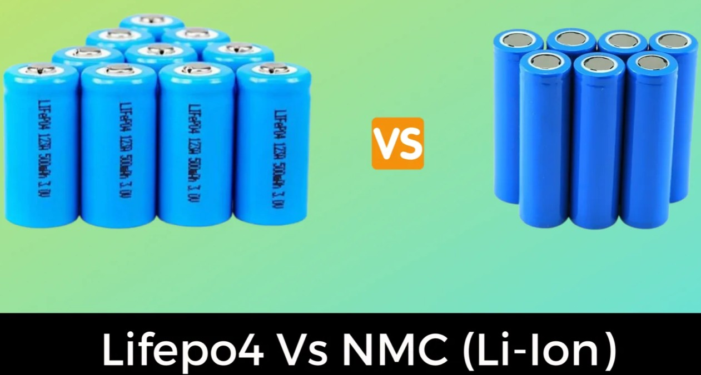

Chọn pin lithium hay LFP

Pin Lithium-ion và LFP: Nên chọn loại nào?
Khi mua xe đạp điện, xe máy điện, ô tô điện hoặc pin lưu trữ điện mặt trời, bạn có thể gặp hai loại pin phổ biến: Lithium-ion (NMC/NCA) và LFP (LiFePO₄).
Lựa chọn phụ thuộc vào việc bạn ưu tiên trọng lượng, quãng đường, tuổi thọ hay độ an toàn.
So sánh nhanh
| Tiêu chí | Lithium-ion NMC/NCA | LFP (LiFePO₄) |
|---|---|---|
| Mật độ năng lượng | Cao | Thấp hơn |
| Số chu kỳ sạc | ~500 - 1.500 | ~2.000 - 5.000+ |
| Tuổi thọ sử dụng | Tốt | Rất tốt |
| Độ an toàn nhiệt | Tốt | Rất tốt |
| Trọng lượng cùng dung lượng | Nhẹ hơn | Nặng hơn (~25%) |
| Kích thước cùng dung lượng | Nhỏ hơn | Lớn hơn |
| Giá/kWh | cao hơn | thấp hơn |
| Sạc đầy 100% thường xuyên | Không lý tưởng | Phù hợp hơn |
| Phù hợp nhất | Xe cần nhẹ, tầm xa | Xe phổ thông, lưu trữ điện |
| Giá trên mỗi kWh | cao hơn | thấp hơn |
| Thời gian sử dụng thực tế | 3 - 5 năm | 7 – 10 năm |
LFP và Lithium-ion khác nhau ở đâu?
Thực ra LFP cũng là một loại pin Lithium-ion. Khác biệt nằm ở vật liệu hóa học của cell.
NMC/NCA sử dụng nickel và các vật liệu khác để đạt mật độ năng lượng cao.
LFP sử dụng lithium iron phosphate, có mật độ năng lượng thấp hơn nhưng bền và ổn định nhiệt hơn.
🚲 Xe đạp điện, xe máy điện
Nếu bạn muốn chiếc xe:
• nhẹ
• nhỏ gọn
• đi được xa với bộ pin nhỏ
→ NMC/NCA có lợi thế.
Nếu bạn muốn:
• sử dụng nhiều năm
• sạc thường xuyên
• ít phải thay pin
• ưu tiên độ an toàn
→ LFP đáng cân nhắc hơn.
Với xe điện phổ thông, nếu trọng lượng không phải vấn đề lớn, LFP thường là lựa chọn rất tốt.
☀️ Pin lưu trữ điện mặt trời
Đây là trường hợp LFP có lợi thế rõ ràng.
Pin lưu trữ thường phải:
Sạc ban ngày → xả ban đêm → lặp lại hàng nghìn lần.
Do đó tuổi thọ chu kỳ, độ an toàn và chi phí vòng đời quan trọng hơn việc pin nhẹ vài kilogram.
→ LFP thường là lựa chọn rất phù hợp cho hệ thống lưu trữ điện mặt trời.
Điều quan trọng hơn cả loại pin
Hãy kiểm tra thêm:
• Cell của hãng nào?
• Dung lượng thực tế bao nhiêu kWh?
• Chi phí thay pin là bao nhiêu?
Kết luận
| Nhu cầu | Nên ưu tiên |
|---|---|
| Xe càng nhẹ càng tốt | NMC/NCA |
| Tầm hoạt động tối đa với trọng lượng thấp | NMC/NCA |
| Xe điện phổ thông | LFP |
| Muốn dùng pin lâu năm | LFP |
| Ưu tiên độ an toàn | LFP |
| Lưu trữ điện mặt trời | LFP |